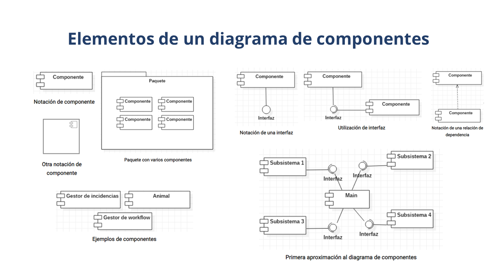

Elementos o Partes de un Diagrama de Componentes:
Componentes: Los componentes son las partes principales del sistema que encapsulan funcionalidades relacionadas y pueden ser reutilizados en diferentes contextos. Se representan con rectángulos con su nombre en su interior. Cada componente puede estar formado por otros componentes más pequeños, formando una jerarquía de componentes.
Interfaces: Las interfaces son los puntos de conexión que los componentes ofrecen a otros componentes. Pueden ser interfaces requeridas o interfaces proporcionadas. Las interfaces requeridas especifican las funcionalidades que un componente necesita de otros componentes para funcionar correctamente, mientras que las interfaces proporcionadas especifican las funcionalidades que un componente ofrece a otros componentes. Se representan con líneas en los bordes de los componentes.
Relaciones de Dependencia: Las relaciones de dependencia representan las dependencias entre los componentes, indicando que un componente depende de otro en algún aspecto, por ejemplo, mediante la utilización de sus interfaces. Se representan con líneas sólidas entre los componentes, con una flecha que apunta desde el componente que depende hacia el componente del que depende.
Relaciones de Asociación: Las relaciones de asociación representan las asociaciones entre los componentes, indicando que un componente utiliza o está relacionado de alguna manera con otro componente. Se representan con líneas sólidas entre los componentes, sin flechas.
Grupos de Componentes: En algunos casos, es útil agrupar varios componentes relacionados en un único componente de nivel superior. Esto puede ayudar a simplificar la representación del diagrama y a mostrar relaciones de dependencia o asociación entre grupos de componentes. Se representan con rectángulos que contienen otros componentes en su interior.
Usos y Beneficios de los Diagramas de Componentes:
Visualización de la Arquitectura del Sistema
Los diagramas de componentes proporcionan una vista de alto nivel de la estructura de componentes del sistema, lo que facilita la comprensión de su arquitectura.
Identificación de Componentes Clave
Permiten identificar los componentes principales del sistema y comprender cómo están organizados y relacionados entre sí.
Análisis de Dependencias y Asociaciones
Ayudan a analizar las dependencias y asociaciones entre los componentes del sistema, lo que puede ser útil para identificar posibles puntos de fallo o mejorar la modularidad y la reutilización del código.
Documentación del Diseño del Sistema
Los diagramas de componentes pueden ser utilizados como parte de la documentación del diseño del sistema, proporcionando una representación visual de su estructura y componentes.